minimal-mistakes 기반 Utterances 댓글 적용
- 2021, 맥북 프로 M1 Pro 14인치 모델
- Ventura 13.1
Disqus에서 Ufferances로 바꾼 이유.
Disqus의 치명적인 단점.
- 어느샌가 몰래 덕지덕지 붙어있는 광고들..
- 왠지 모르게 무겁다.
- 왜 나만 글자가 투명색(흰색)으로 나오는지ㅠ
Disqus 내 설정을 바꿔도, Only 흰색 글자만 나온다.
결국 이러한 점 때문에 바꾸었다. (하얀색 배경으로 된 테마를 사용 못 하기 때문.) - 광고 없애려면 유료…
그렇다면 장점은 없나?
- 구글, 페이스북, 트위터, 디스쿼스 등의 다양한 로그인 종류 제공
- 설치가 편하다..?
결론은 장단점 따지기 전에, 아예 흰색 테마에서는
사용을 못 하기 때문에 바꾸기로 마음먹었다.
구글링 해도 전혀 나오지도 않아요…!
Utterances 장단점
장점
- 가볍다.
- 거의 실시간으로 댓글 알림을 받을 수 있다.
- 깔끔하며, 테마 변경 가능
- 깃허브랑 연동이 가능하다.
- 무료..🌝
단점
- 깃허브 계정이 있어야 구현할 수 있다.
- 댓글 작성 시 오직 깃허브 계정으로만 로그인이 가능하다.
- 댓글 삭제 기능이 없다. (깃허브 이슈 내에서만 가능)
결론적으로, 깃허브 계정을 가지고 있고 개발 관련 포스팅 or TIL을 위주로 올리기 때문에
댓글 다시는 분들도 깃허브 계정이 있으리라?? 판단하여 단점은 상쇄됐다.
Utterances 동작원리.
Github Issue 기반.
Utterances는 Github의 App이다.
Github의 repositroy 안의 Issue 기능으로 동작한다.
예를 들어, 블로그 댓글 작성 시 -> Github/repository의 Issue가 생성되며
해당 Issue의 Comment가 댓글이 되는 것이다.
결국 우리의 Repository를 댓글 Database로 쓰는 셈이다.
- Repository : Issue, Comment를 담을 저장소.
- Issue : 해당 포스팅이 대한 정보를 담고 있음, 포스팅 1개당 Issue는 1개
- Comment : 실제 댓글
- Issue : 해당 포스팅이 대한 정보를 담고 있음, 포스팅 1개당 Issue는 1개
Utterances 설치하기 ⭐️
Github App 설치
- 자신의 깃허브 계정에 Utterances를 이용, 댓글이 담길 새로운
repository를 생성 ( ⭐️ public이어야 한다. ) - 아래의 링크 클릭하여 install로 자신의 깃허브 계정에 Utterances 앱을 설치!
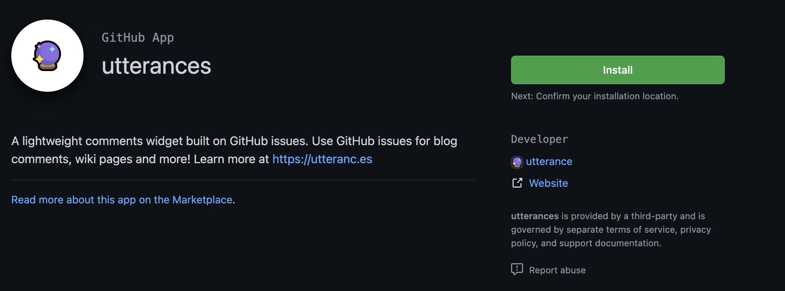
1번에서 만든 repository를 주소를 선택하여 install 해준다.
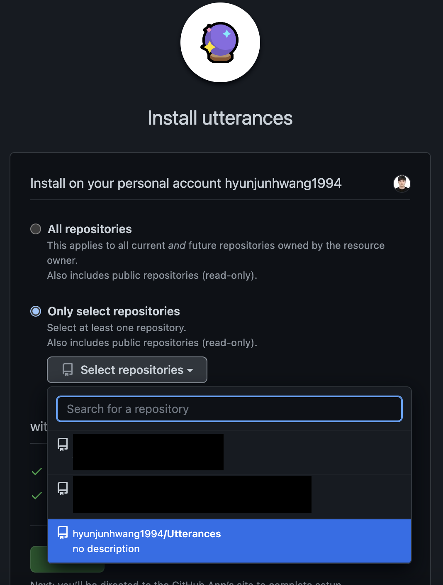
repository name으로 Utterances는 나중에 헷갈릴 것 같아.
직후에 repository name을 Utterances-comments로 변경했습니다.
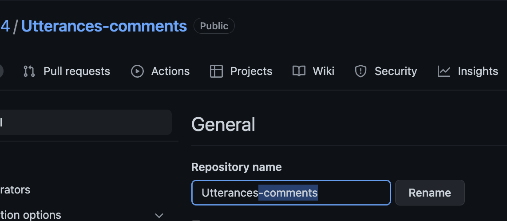
이제 repository에 App 설치는 끝났습니다.
minimal-mistakes 테마 사용 중인 경우 클릭⭐️
일반 Utterances 설치.
아래에 경우 이 과정을 진행해 주세요.
- minimal-mistakes 테마를 사용하지 않음.
- _config.yml에 댓글 추가 기능이 없는 경우
- 새로운 플랫폼이나, 기초부터 Utterances를 생성하고 싶은 경우
아래의 링크로 이동!
Utterances 설정
그럼 이런 화면이 나오실 겁니다!
repo에 자신의 repository name을 넣어주세요.
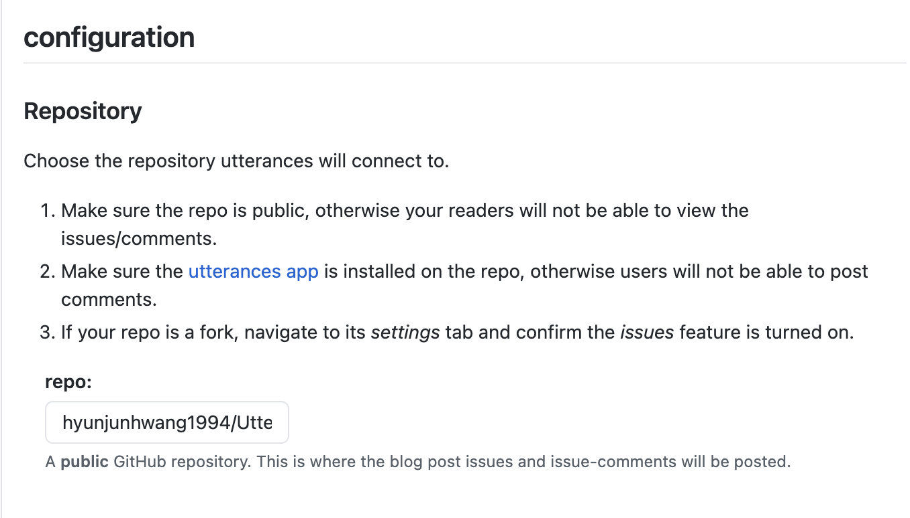
아래의 주소 복사해서 넣으면 됩니다.
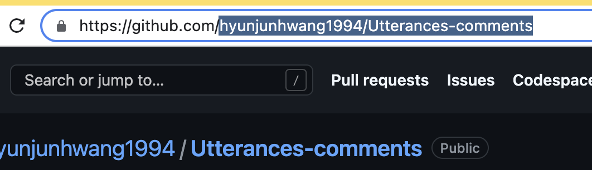
해당 댓글을 repository에서
어떤 기준으로 매핑할 건지 정하는 옵션입니다.
블로그 포스팅 시 파일명은 잘 수정하지 않으므로
Issue title contains page pathname으로 선택해 주세요.
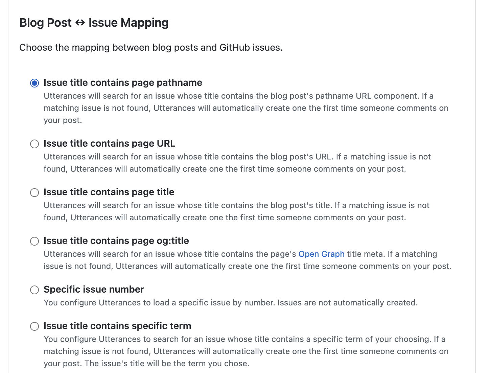
Issue Label 설정 (Comment 시 달릴 라벨)
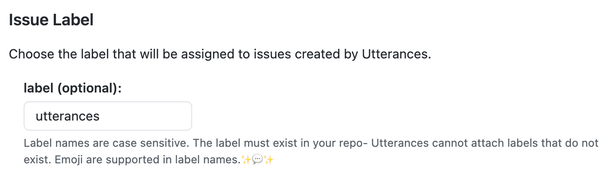
Theme 설정 (원하는 테마로 설정하세요.)
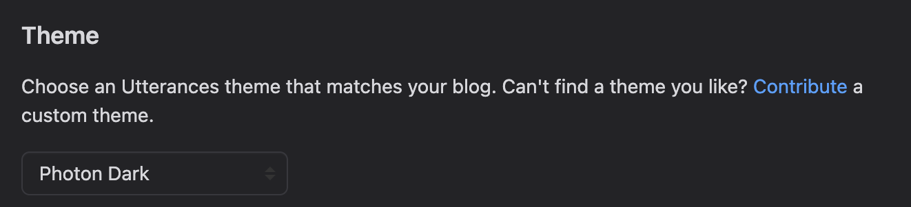
이제 방금 선택한 옵션들을 포함한 소스코드가 만들어집니다. (Copy 클릭)
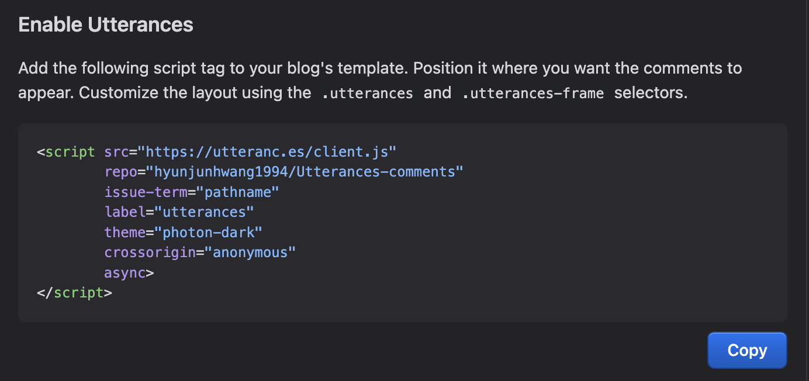
이제 댓글을 추가하고 싶은 html 파일에
복사한 소스코드를 붙여넣기 해주면 돼요!
minimal-mistakes 사용자의 Utterances 설치.
minimal-mistakes를 테마로 쓰시는 경우,
_config.yml에 utterances 관련 설정이 있는 경우
사실 minimal-mistakes의 경우 이미 포스팅 할 때
참조되는 레이아웃에 utterances 관련 파일이 만들어져있으므로
설정 파일인 _config.yml만 바꿔주면 됩니다.
- repository: Utterances 앱 설치한 repository 주소를 사진의 형태와 맞게 입력.
- provider: “utterances”
- theme: 옆에 주석 참조하여 테마 설정
- issue_term: “pathname”
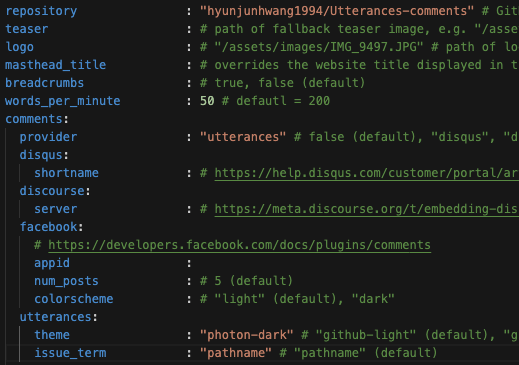
label(optional)의 경우 추가하고 싶다면 아래처럼 만들어주면 된다.
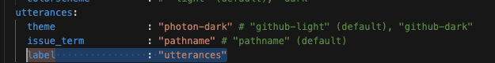
아래처럼 utterances를 만들어주는 코드가 이미
_includes/comments-providers/utterances.html에 숨어있다.
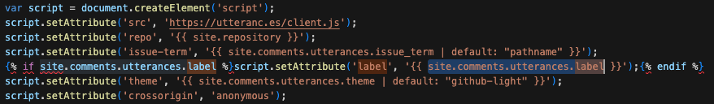
이제 커밋, 푸쉬 후 약간의 시간이 흐른 뒤 본인의 깃허브 블로그에 들어가면
적용되어 있을 것이다.
그 외에.
포스팅 파일명을 변경 한 경우
실제 댓글을 달면?
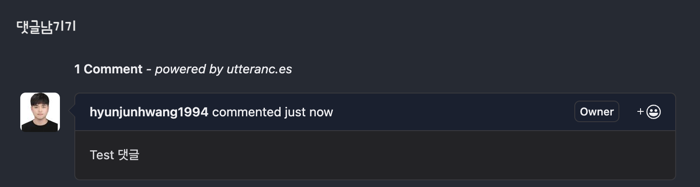
실제 레파지토리에 이슈 생성 -> comment 생성 과정이 진행된다.
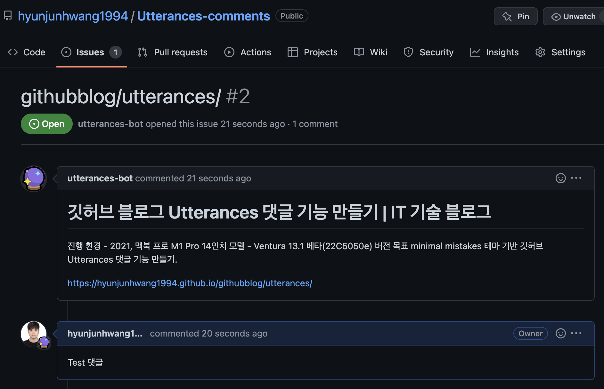
이때, Isuue가 포스트의 파일명인 /Utterances를 참조하고 있으므로
해당 글의 포스트 내용은 변경해도 되지만,
아래처럼 포스팅의 파일 이름을 변경하면 댓글에서 참조하고 있는
URL 주소가 바뀌므로 댓글이 사라집니다.
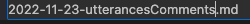
파일명 변경하자 댓글이 삭제됨.
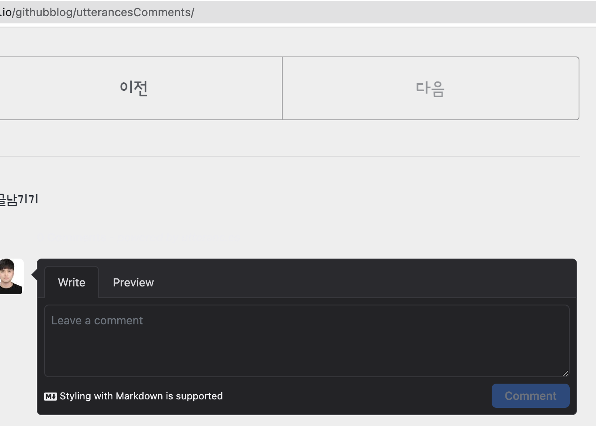
이때는 issue, issue 안 내용을 바꿔주면 된다.
일단 issue 이름부터 바꿔줍니다.
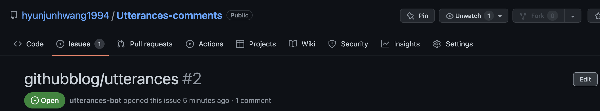
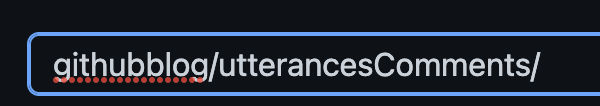
그리고 안에 내용에서 경로도 바꿔주어야 합니다.
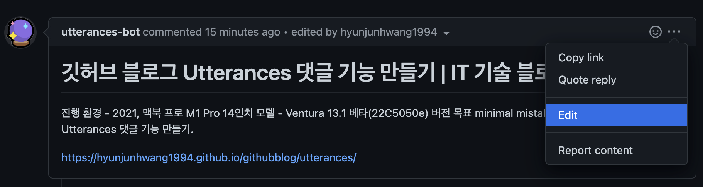
바꾼 뒤 업데이트!
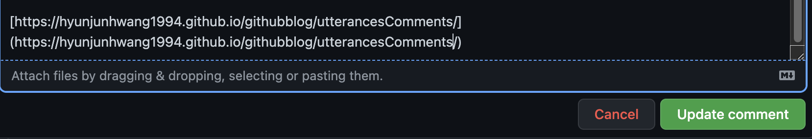
Issue 이름, 내용 둘 다 바꾸면 댓글이 복구됩니다.
댓글 삭제
특정 댓글 삭제의 경우 직접 레파지토리에서
해당 Issue(글) -> Comment(댓글)를 삭제하면 됩니다.
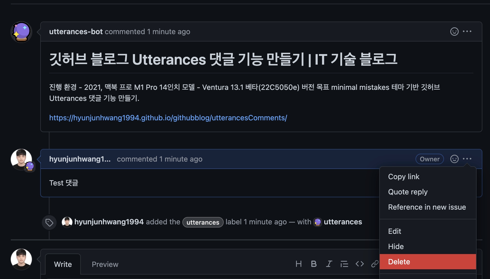
해당 게시물의 댓글 통째로 삭제하시려면 (이슈 통으로 삭제)
해당 이슈 들어가서 오른쪽 아래의 Delete issue를 하면 됩니다.
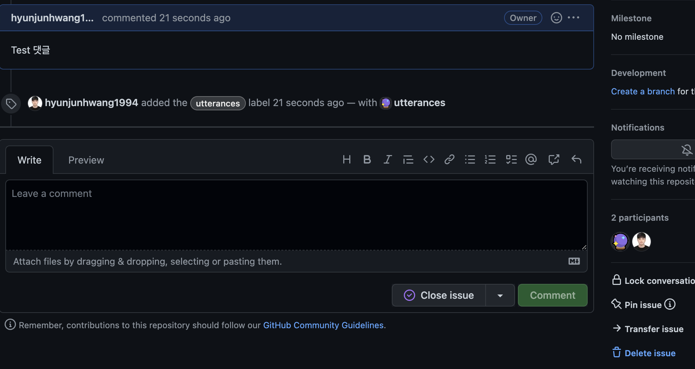
알람도 온다?
알람은 다음과 같은 경우 옵니다.
- 첫 댓글이 달려 Issue가 생성된 경우
- 댓글이 달린 경우 (자신의 댓글은 알람 오지 않습니다.)
거의 실시간으로 빠르게 오네요.
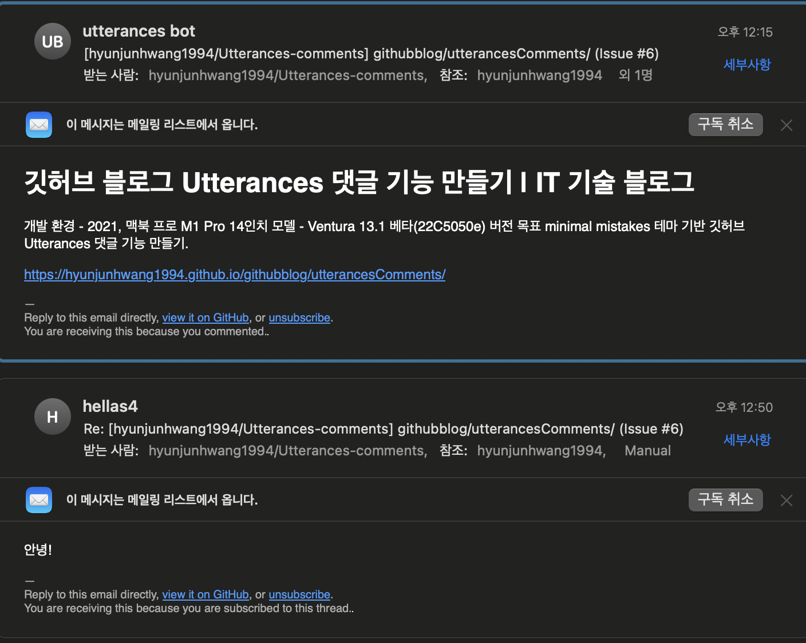
Issue Number
repository에서 이슈 삭제 재생성 시 Issue Number가 1번이 아닌
그전 번호가 쌓여서 2, 3처럼 진행되는데
댓글 기능엔 이상이 없으므로 그다지 신경 안 써도 될듯합니다.
참조 블로그
https://computasha.github.io/etc-utterances/
https://ansohxxn.github.io/blog/utterances/